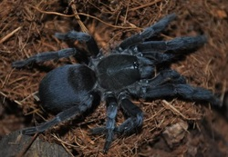
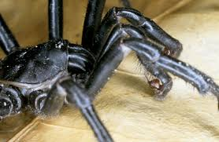

There are few requirments to sex tarantulas besides a tarantulas that is.
You will need a magnification device such as a hand loop as well as a light source.
Sexing a tarantula is not easy, however it is not hard given the right situation.
With Mature male tarantulas it is especially obvious as they have a pair of mating hooks
(Tibial apophyss) found on the first pair of legs;
(not the pedipals which bear the palpal bulbs).
Females have a more rounded
appearance and usually shorter legs as well as typically being a larger spider.
| Mature female lacking hooks with more "full" appearance. |  |
| Mature male with hooks and bulbs. |  |
Anatomy vocabulary
Pedipalp
Chelicerae
Leg
Prosoma
Opithosoma
The best way to sex a tarantula is through the use of its exuvia which is the animals cast off moult.
The inside of the exuvia's opithosoma is examined in the area between the bottom set
of booklungs. This is the spermathecae A strucure resembling the shape of an "M" or
fence indicates a female The lack of this structure may indicate a male however; this may
alternatively indicate a immature female. That is A female specimen that may need further
development before the spermathecae is obvious.